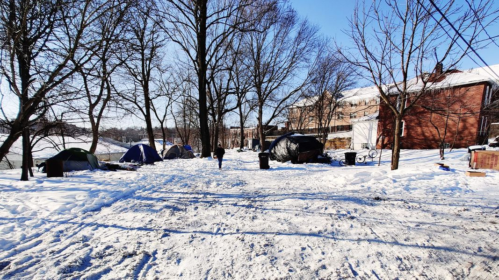

Mobile uploads
I took this picture this morning. It's of the Houseless Movement House and Garden. I love this picture because I think it makes people feel certain ways. It was -7 degrees when I took this picture.
The outdoor shelters currently house 4 women and 5 men. There are more people pleading for a space. 2 more tents will probably go up today. The colder it gets the more people that are desperate for shelter.
I used to be sad when I sheltered people like this. I was disheartened that was all I could offer. I think a lot of people feel sad when they see this scene.
Today this picture fills me with joy.
I love it because the weather forces these people to think about something bigger than themselves - which, ironically, is keeping themselves alive. You don't have time to feel depressed and sorry for yourself when you have no choice other than staying alive.
I am also filled with joy because this is only possible because of so many people coming together to make it happen. You are looking at easily $5000 worth of material and countless hours of work by rich people, poor people, housed people and houseless people. And of course, conservatives and progressives. Communists and capitalists. It's possibly the most diverse collaboration of people ever assembled. Even if they don't physically all come together at once, they are clearly together in spirit.
Almost every tent has electricity and heaters and electric blankets. But no one is going to put these tools to work for you other than you. If you want to be warm you have to make it happen yourself.
They are all doing wonderfully and rising to the occasion.
There is a lot to be learned in this environment. (and they also are able to come in the basement of the house for warmth and the full bathroom.)